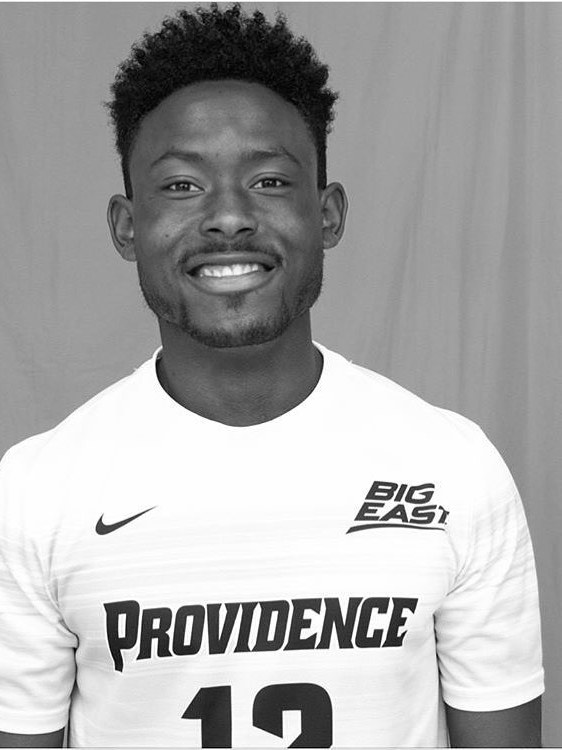

Personal soccer trainer. Multi-dimensional development consultant. Civic service, entrepreneurial development, and educational administration.

Brian Kennedy Jr was born and raised in Upland, California. He played Division I soccer at Providence College, wearing #12 for the Friars in the BIG EAST Conference. In 2014, Providence captured the BIG EAST Conference Championship and advanced to the NCAA Final Four — both firsts in program history. Two years later the Friars claimed the BIG EAST Regular Season title and reached the NCAA Elite 8. Brian earned his B.A. in Political Science in 2017 and returned to complete his M.Ed. in Guidance & Counseling in 2019, earning Athletics All-Academic Honor Roll recognition along the way.
After Providence, Brian returned to Southern California with a mission: take what he learned at the Division I level — the discipline, the training systems, the leadership — and make it available to youth in the Inland Empire. He founded The Ballers Kingdom in 2019 as the vehicle for that work — beginning as personal one-on-one soccer training and growing into a multi-dimensional development consulting practice spanning life (personal), academic (educational), career (vocational), business (entrepreneurial), and digital growth.
Brian's coaching is built on three pillars — Faith, Family, and Furtherment. Faith gives character; family gives foundation; furtherment moves every player forward. That framework runs through every private session, every youth clinic, and every Youth Venture Program cohort he leads.
Off the field, Brian serves as Entrepreneur Ecosystem Executive Director at AmPac Business Capital — the SBA's first faith-based certified lender and the #1 SBA 504 lender for the Orange County / Inland Empire District in 2017. He directs access-to-capital programming and technical assistance across SBA 504, 7(a), microloan, SSBCI, and CDFI product lines, helping deploy $1B+ in loans and support 1,500+ businesses across California, Arizona, and Nevada. He administered $15M+ in PPP relief during COVID and advocates for CDFI and SSBCI priorities with the CDFI Coalition Institute in Washington, D.C.
In 2024, Assembly Majority Leader Emerita Eloise Gómez Reyes recognized Brian with the California District 50 · 30 Under 30 Award for his impact on access to capital, coaching, and community. That same year he founded The Entrepreneur Ecosystem, a 501(c)(3) nonprofit advancing entrepreneurship education, access to capital, and small business support for underserved communities.
Brian also serves as Student Success Counselor at Los Angeles College of Music (LACM), carrying his M.Ed. training into higher education through student, mental-health, career, and academic advising. The Ballers Kingdom is one piece of a larger mission: develop leaders young, and keep developing them for life.
2024 California 30 Under 30 (District 50) · M.Ed. & B.A., Providence College · 2× BIG EAST · NCAA Final Four & Elite 8 · Founded The Ballers Kingdom 2019 · Founded The Entrepreneur Ecosystem 501(c)(3) 2024 · $1B+ in loans deployed · 1,500+ businesses supported · $15M+ PPP deployed · CA · AZ · NV.
Whether it's private soccer training, a YVP cohort, or a team program — the first step is always a consultation.